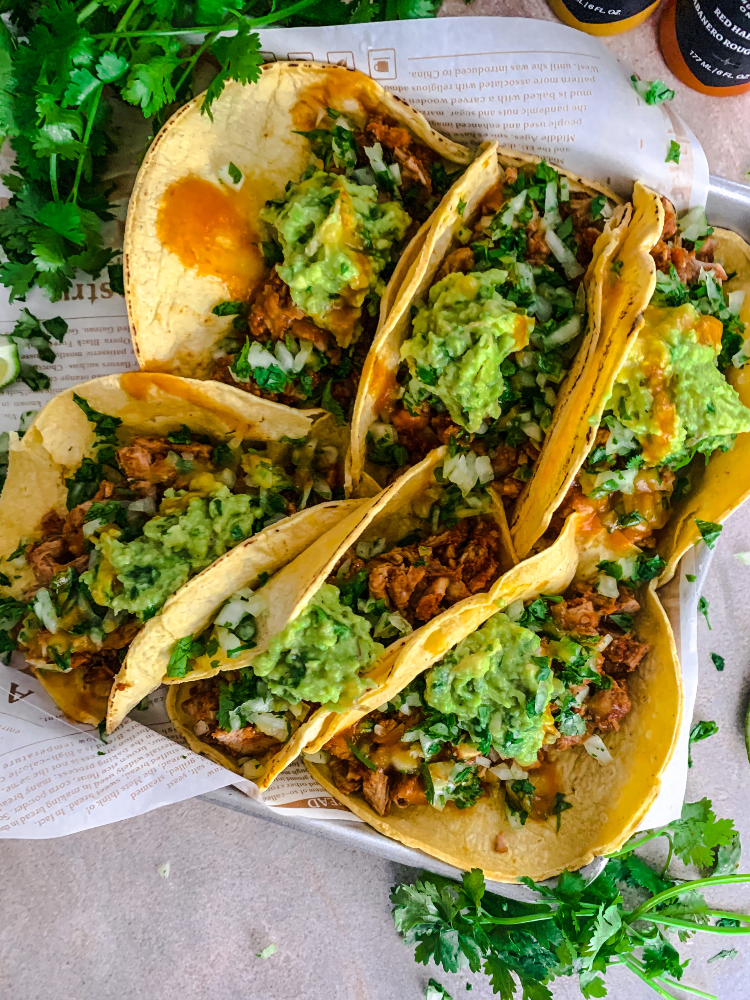

Beef Tacos

Beef Tacos are a favorite Taco Tuesday dinner for my family! Over the years I’ve tweaked how I’ve made them and this is definitely my favorite way to make tacos. I usually make two pounds of ground beef, so we have some leftovers. I love serving these with some fresh Pico de Gallo and some Pomegranate Guacamole!
Ingredients to make the best tacos
- 2 lb ground beef
- 1 chopped onion
- 2 TBSP minced garlic
- 1 tsp each of salt and pepper
- 1/2 tsp cayenne
- 4 tsp chili powder
- 2 tsp each of cumin and dried cilantro
- 1 1/2 cups of beef broth
- White corn tortillas
- 1 tbsp oil
- Shredded Monterey Jack cheese
- Taco Toppings (sour cream, taco sauce, Pico de Gallo, shredded lettuce)
The steps to make the best tacos you've ever tried
- Add ground beef and a chopped onion to a skillet over medium high heat. Once beef is cooked through drain the grease grease. Add minced garlic, all seasonings and beef broth.
- Bring to a boil then lower the heat. Cover and let simmer for about 20 minutes until the liquid has reduced.
- Bring to a boil then lower the heat. Cover and let simmer for about 20 minutes until the liquid has reduced.
- Lay the tacos out on paper towels to absorb any extra grease. Top tacos with your favorite toppings and enjoy!
Back Home